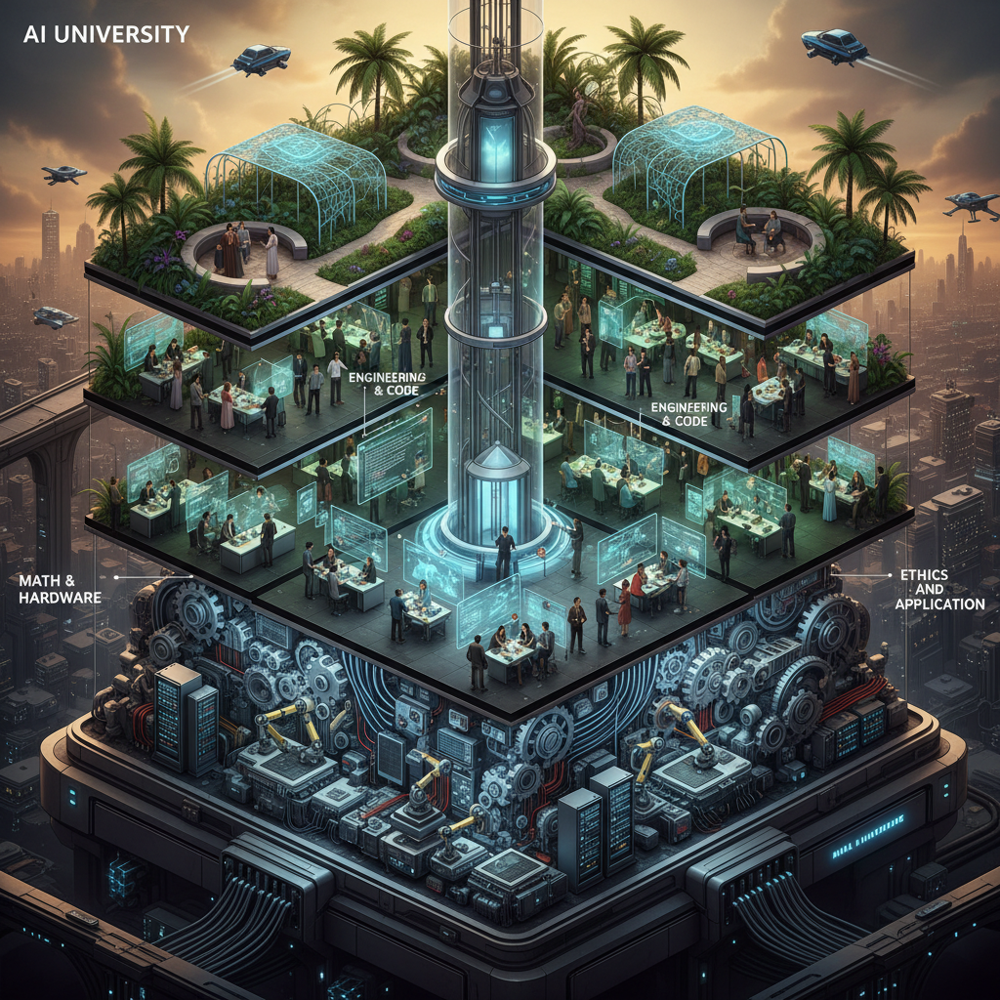
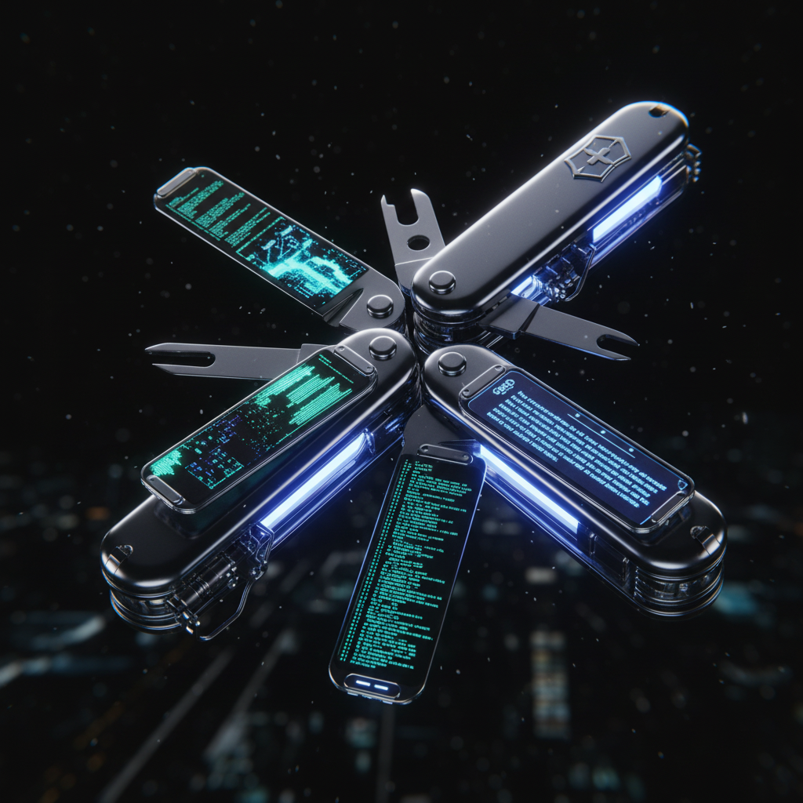
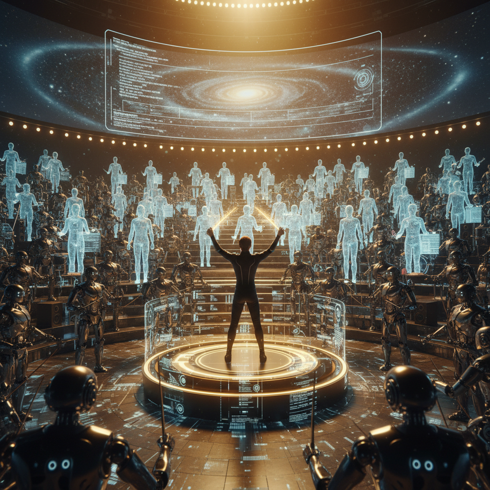
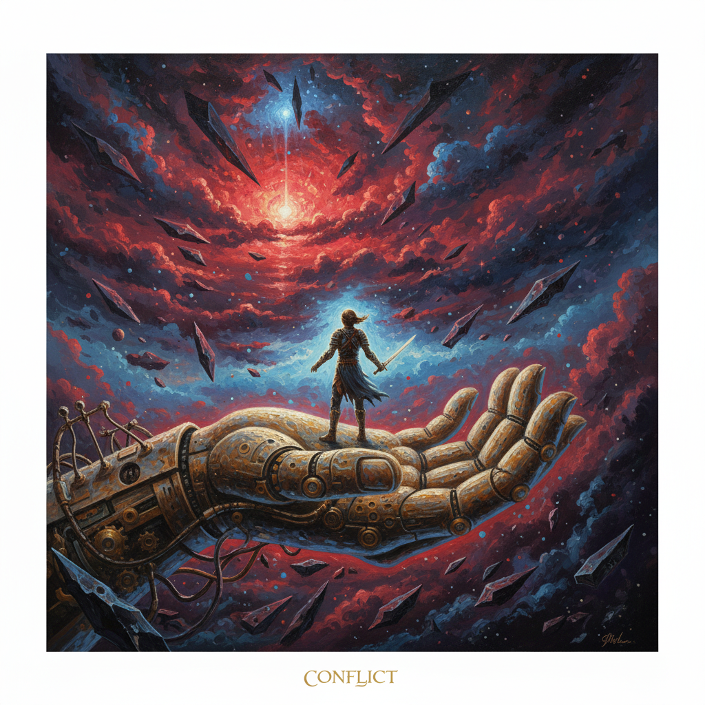

Prepared for: WaytoAGI Project & Partners
Date: February 2025
Reviewer: McKinsey Digital Practice
审核人： Dr. James H., Senior Partner at McKinsey
本文件已从最初的"入门指南"升级为一份具有战略深度的"行业白皮书"。我们注意到以下显著改进：
关键建议： 建议将第三章的"超级个体"战略作为企业人才培养的核心参照系，未来组织的最小单元将不再是"部门"，而是"人+AI Agent"。
专注领域: 认知科学、机器学习教育体系构建

Figure 1: The Future of AI Learning - A Multi-Layered Approach
传统的学习模型是基于"存储"的——我们将知识搬运到大脑皮层。但在 LLM (Large Language Models) 时代，世界知识已经被高度压缩在模型的权重(Weights)中。人类大脑的角色必须从"硬盘"转型为"CPU"。
我们需要的不再是背诵《红楼梦》的全文章节，而是具备一种"元认知" (Metacognition)：知道《红楼梦》存在、知道它可以被分析、知道如何引导 AI 去提取其中的社会学价值。
无论你是想成为技术专家，还是能够驾驭技术的管理者，以下路径是必经的"硬知识"储备：
不要一开始就写代码。你需要建立对 AI 的"直觉"。这意味着理解什么是概率、什么是向量空间(Vector Space)。
Python 是 AI 时代的通用语。这一阶段的核心是"数据工程"。根据 WaytoAGI 项目的经验，80% 的模型效果取决于数据质量。
这是通往专家的分水岭。选择一个垂直领域进行 Fine-tuning (微调)。
专注领域: 开发者效率、技术栈选型、SaaS 生态

Figure 2: The AI Tool Matrix - Specialized Instruments for Specialized Tasks
我们评价一个 AI 工具，不看它"能做什么"，而看它"在工作流中替代了什么环节"。以下是基于 2024-2025 年视角的深度矩阵：
| 生态位 (Niche) | 头部玩家 | 深度解析与差异化 | 护城河 |
|---|---|---|---|
| 通用推理引擎 | ChatGPT (O1/4o) Claude 3.5 Sonnet DeepSeek R1 |
ChatGPT 依然综合最强；Claude 3.5 在代码理解和长文本上已超越前者；DeepSeek 则是性价比之王，且开源生态极佳。 | 基座模型的推理能力 |
| AI IDE (编程) | Cursor | Cursor 不是简单的插件，它 Fork 了 VS Code，接管了整个 File System。它能理解"项目级上下文"，这是 Copilot 暂未做到的。 | Context 理解能力 |
| 知识与研究 | NotebookLM Perplexity |
NotebookLM 引入了"Audio Overview" (播客模式)，将被动阅读转化为主动听觉学习，是认知学习的革命。Perplexity 正在杀死传统 SEO。 | RAG 算法与交互 |
| 视觉工作流 | ComfyUI Midjourney |
Midjourney 是"摄影师"，ComfyUI 是"魔法师"。ComfyUI 的节点式工作流允许对生成过程进行像素级的控制，是工业界首选。 | 可控性 (Controllability) |
很多初学者陷入了不停寻找新工具的陷阱。我的建议是：精通一个，胜过了解一百个。 如果你能把 Claude 3.5 用到极致（System Prompt 优化、Artifacts 交互），你的一小时产出能抵得上普通人一周。
专注领域: 个人效能、超级个体、数字游民

Figure 3: The Rise of the Super-Individual - Orchestrating Digital Labor
在旧世界，你的价值取决于你能搬多少砖（写多少代码、画多少图）。在 AI 世界，边际生产成本趋近于零。你的价值取决于：
这不仅是针对企业的建议，也是给每个人的建议。参考 WaytoAGI 的做法，你应该开始：
专注领域: 数字化转型、组织架构变革、数据治理
Figure 4: The Data Governance Divide - Chaos vs. Order
这是麦肯锡咨询中最常发现的痛点。企业想做 AI，但数据都在员工的个人电脑里、在图片格式的合同里、在不可检索的语音会议里。
行动清单：
不要妄想训练一个"全知全能"的大模型。最具性价比的企业架构是：
专注领域: 人机交互心理学、未来工作观

Figure 5: Symbiosis - Finding Peace in the Age of Giants
AI 让我们焦虑，不仅是因为饭碗，更因为它挑战了人类作为"地球唯一智慧生物"的自恋。创作、编程、逻辑推理，这些曾经我们引以为傲的"人类独有"技能，现在被算法解构了。
但请记住，解构不是毁灭。照相机发明时，画家们也曾恐慌艺术的终结。结果呢？印象派诞生了，艺术从"再现"走向了"表现"。
学会将低级的认知负荷卸载给 AI。
腾出的大脑带宽，用来思考：我是谁？我想创造什么？人与人的连接在哪里？ 这才是不可被代码化的部分。